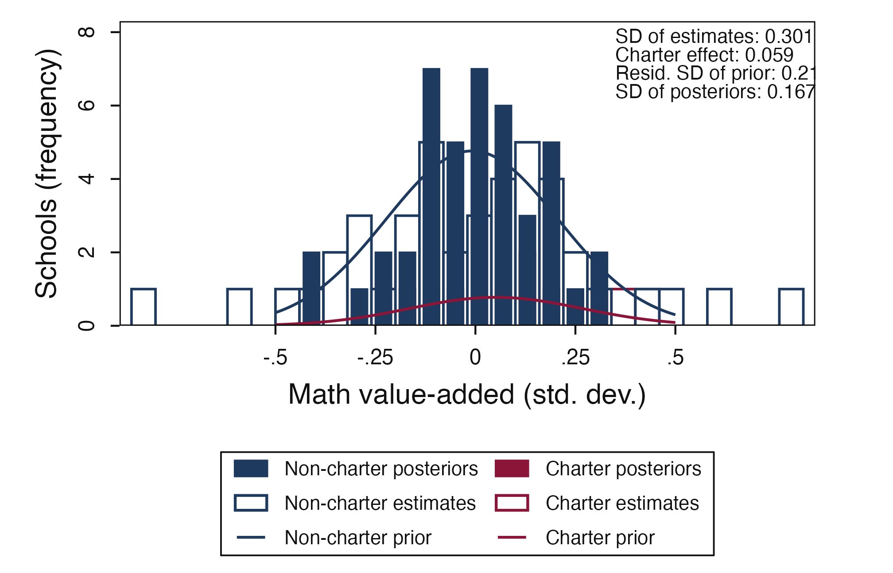

A3: School value-added workflow - linear EB on simulated and bundled data
JoonHo Lee
2026-05-11
Source:vignettes/a3-school-vam-workflow.Rmd
a3-school-vam-workflow.RmdAbstract
School value-added models (VAMs) are the canonical linear-EB
application: school-level random effects shrunken toward a common
mean using Normal-Normal closed forms. This vignette teaches the
workflow through three increasingly realistic paths — fitting
eb_vam() directly on student-level simulated data,
importing a pre-aggregated school summary, and adjusting for a
charter indicator via conditional EB. Because the original Boston
administrative data is restricted-access, we use the bundled
vam_simulated and vam_schools datasets,
both calibrated to match Angrist et al. (2017). You will recover
the true school effects and visualize how shrinkage corrects the
over-dispersion of raw point estimates.
1. Why VAM is the canonical linear-EB example
When the prior on school effects is approximately Gaussian, the posterior has a closed form: a precision-weighted convex combination of the raw estimate and the prior mean. This is the linear empirical Bayes (Normal-Normal) recipe, made famous in education by Angrist et al. (2017) and reviewed in Walters (2024, sec. 2.8).
“If you imagine value-added scores as samples from a population distribution of true school effects, then your best guess about any one school’s effect is a weighted average of its observed score and the population mean — weighted by precision.” — Walters (Walters 2024, paraphrasing §2.8)
Execution ≈ 1 min; reading + reflection ≈ 75 min.
2. The data: simulated stand-in for Boston
Two bundled datasets back this vignette:
data(vam_simulated) # 2500 students × 50 schools (DGP truth known)
data(vam_schools) # 50 school summaries (theta_hat, se, charter)
str(vam_simulated)
#> 'data.frame': 2500 obs. of 5 variables:
#> $ student_id: int 1 2 3 4 5 6 7 8 9 10 ...
#> $ school_id : int 31 30 3 36 2 49 37 1 34 30 ...
#> $ x : num -0.734 -1.045 -1.216 -0.492 -0.651 ...
#> $ theta_true: num 0.35 -0.216 -0.108 -0.3 0.224 ...
#> $ y : num -1.0357 -2.0319 0.0179 0.0084 -0.5076 ...
str(vam_schools)
#> 'data.frame': 50 obs. of 4 variables:
#> $ school_id: int 1 2 3 4 5 6 7 8 9 10 ...
#> $ theta_hat: num -0.1583 0.1385 -0.1263 -0.0698 0.2022 ...
#> $ se : num 0.207 0.255 0.124 0.1 0.478 ...
#> $ charter : logi TRUE FALSE FALSE FALSE FALSE FALSE ...Disclosure: vam_simulated is calibrated
to the Angrist et al. (2017) benchmark on
Boston schools, but the original administrative data is
restricted-access. The simulation gives us ground truth
(true_school_fx), which lets us verify shrinkage
rather than just assert it.
3. The math in 5 lines
For a Gaussian prior and observation model , the posterior is closed-form:
The reliability
is learned from the data via method of moments. For derivation
and verification, see
vignette("m2-linear-eb-normal-normal").
4. Path A — Student-level fit
The most direct entry point: hand eb_vam() student-level
data and a formula for the school grouping.
fit_a <- eb_vam(
y ~ x | school_id,
data = vam_simulated,
method = "linear"
)
print(fit_a)
#> <eb_vam_fit> (value-added pipeline)
#> method: linear
#> units (J): 50
#>
#> log-likelihood: NA
#>
#> PRIOR ----
#> <eb_prior>
#> method: normal
#> scale: theta
#> support: 2 points range=[-0.235, 0.164]
#> hyperparameters:
#> mu = -0.036
#> sigma_theta = 0.200
#> sigma_theta_sq = 0.040
#>
#> POSTERIOR ----
#> <eb_posterior>
#> method: linear
#> units: 50
#> posterior_mean: mean=-0.038 range=[-0.316, 0.307]
#> shrinkage_weight: mean=0.580 range=[0.216, 0.899] (linear path)
#>
#> call: eb_vam(formula = y ~ x | school_id, data = vam_simulated, method = "linear")5. Reading the VAM output
The <eb_vam_fit> marker wraps an
<eb_fit> for the linear EB posterior. Key fields:
-
method = linear— Normal-Normal closed form (no log-spline) -
PRIOR—mu,sigma_theta_sq(positive-part MoM) -
POSTERIOR— posterior means +shrinkage_weight
The CLI-decorated panel (optional, requires the cli
package):
format_eb_vam_fit_cli(fit_a)6. Path B — Imported school summary
In practice you often have only school-level point estimates and
standard errors (not the raw student data). eb_vam()
accepts that shape too:
fit_b <- eb_vam(
theta_hat ~ 1 | school_id,
data = vam_schools,
se_source = "vce_matrix",
vce_matrix = diag(vam_schools$se^2),
method = "linear"
)
print(fit_b)
#> <eb_vam_fit> (value-added pipeline)
#> method: linear
#> units (J): 50
#>
#> log-likelihood: NA
#>
#> PRIOR ----
#> <eb_prior>
#> method: normal
#> scale: theta
#> support: 2 points range=[-0.202, 0.240]
#> hyperparameters:
#> mu = 0.019
#> sigma_theta = 0.221
#> sigma_theta_sq = 0.049
#>
#> POSTERIOR ----
#> <eb_posterior>
#> method: linear
#> units: 50
#> posterior_mean: mean=0.006 range=[-0.419, 0.327]
#> shrinkage_weight: mean=0.615 range=[0.177, 0.912] (linear path)
#>
#> call: eb_vam(formula = theta_hat ~ 1 | school_id, data = vam_schools, se_source = "vce_matrix", vce_matrix = diag(vam_schools$se^2), method = "linear")Path A and Path B should produce nearly identical posteriors when the inputs match — verifying that the package’s two entry points agree.
7. Path C — Conditional EB (charter adjustment)
Charter schools may have a systematically different prior mean from traditional public schools. Conditional EB lets the prior depend on a covariate.
fit_c <- eb_vam(
theta_hat ~ 1 | school_id,
data = vam_schools,
se_source = "vce_matrix",
vce_matrix = diag(vam_schools$se^2),
conditional_on = ~ charter,
method = "linear"
)
print(fit_c)
#> <eb_vam_fit> (value-added pipeline)
#> method: conditional_linear
#> units (J): 50
#>
#> log-likelihood: NA
#>
#> PRIOR ----
#> <eb_prior>
#> method: normal
#> scale: theta
#> support: 2 points range=[-0.197, 0.235]
#> hyperparameters:
#> mu = 0.019
#> sigma_theta = 0.216
#> sigma_theta_sq = 0.047
#>
#> POSTERIOR ----
#> <eb_posterior>
#> method: conditional_linear
#> units: 50
#> posterior_mean: mean=0.006 range=[-0.416, 0.336]
#> shrinkage_weight: mean=0.605 range=[0.170, 0.908] (linear path)
#>
#> call: eb_vam(formula = theta_hat ~ 1 | school_id, data = vam_schools, se_source = "vce_matrix", vce_matrix = diag(vam_schools$se^2), conditional_on = ~charter, method = "linear")Why is my charter school’s posterior shifted more?
Two reasons combine: (a) charter schools have smaller samples (lower precision → more shrinkage), (b) the conditional prior for charter schools differs from non-charter. Both effects push the posterior away from the raw estimate.
8. Visualization triplet
plot_vam_prior_posterior(fit_a, method = "unconditional")
Prior vs posterior on simulated Boston-calibrated VAM data. Shrinkage tightens the spread; the prior mean is recovered as the center of mass.
plot_vam_truth_shrinkage(fit_a, truth = vam_simulated)
Truth vs raw vs shrunken posterior. Because this is simulated data, we have ground truth — and posterior means visibly track the true effects better than the raw estimates do.
plot_vam_prior_posterior(fit_c, method = "conditional")
Conditional EB: separate priors for charter vs non-charter schools. The two prior means differ; the posteriors inherit that difference.
9. When to escalate to nonparametric
Linear EB assumes the prior is Gaussian. For Boston VAM that is
approximately true; for fat-tailed problems like firm-level
discrimination, it is not. If eb_diagnose() on your data
warns of departures from Gaussianity, escalate to the nonparametric path
(method = "nonparametric" or the full eb()
workflow). See vignette("a2-discrimination-workflow") for a
worked example.
Practical pitfalls
-
Simulated ≠ real.
vam_simulatedis calibrated, not Boston itself. The simulation is for workflow verification; external validity claims need real-data sensitivity analyses. -
Charter endogeneity.
conditional_on = ~ charterallows the prior to shift with charter status; it does not identify causal effects of charter status on student outcomes. -
Small J (< 30 schools). Even linear EB’s MoM
estimator is unstable when J is small.
vam_schoolshas J = 50, comfortably in range.
Where to next
-
Basics revisit:
vignette("a1-getting-started")if you have not seen the one-calleb()yet. -
Linear EB theory:
vignette("m2-linear-eb-normal-normal")derives the closed forms and the James–Stein bridge. -
Nonparametric escalation:
vignette("a2-discrimination-workflow")shows the full six-stage recipe. -
Log-spline deconvolution theory:
vignette("m3-logspline-deconvolution")explains when a Gaussian prior is insufficient and what the nonparametric path replaces it with.
Provenance
sessionInfo()
#> R version 4.5.1 (2025-06-13)
#> Platform: aarch64-apple-darwin20
#> Running under: macOS Tahoe 26.2
#>
#> Matrix products: default
#> BLAS: /Library/Frameworks/R.framework/Versions/4.5-arm64/Resources/lib/libRblas.0.dylib
#> LAPACK: /Library/Frameworks/R.framework/Versions/4.5-arm64/Resources/lib/libRlapack.dylib; LAPACK version 3.12.1
#>
#> locale:
#> [1] en_US/en_US/en_US/C/en_US/en_US
#>
#> time zone: America/Chicago
#> tzcode source: internal
#>
#> attached base packages:
#> [1] stats graphics grDevices utils datasets methods base
#>
#> other attached packages:
#> [1] ggplot2_4.0.2 ebrecipe_0.5.0
#>
#> loaded via a namespace (and not attached):
#> [1] gtable_0.3.6 jsonlite_2.0.0 dplyr_1.2.0 compiler_4.5.1
#> [5] tidyselect_1.2.1 dichromat_2.0-0.1 jquerylib_0.1.4 splines_4.5.1
#> [9] systemfonts_1.3.1 scales_1.4.0 textshaping_1.0.1 yaml_2.3.12
#> [13] fastmap_1.2.0 R6_2.6.1 generics_0.1.4 knitr_1.50
#> [17] htmlwidgets_1.6.4 tibble_3.3.1 desc_1.4.3 bslib_0.9.0
#> [21] pillar_1.11.1 RColorBrewer_1.1-3 rlang_1.1.7 cachem_1.1.0
#> [25] xfun_0.53 fs_1.6.6 sass_0.4.10 S7_0.2.1
#> [29] cli_3.6.5 withr_3.0.2 pkgdown_2.2.0 magrittr_2.0.4
#> [33] digest_0.6.39 grid_4.5.1 lifecycle_1.0.5 vctrs_0.7.2
#> [37] evaluate_1.0.5 glue_1.8.0 farver_2.1.2 ragg_1.4.0
#> [41] rmarkdown_2.30 tools_4.5.1 pkgconfig_2.0.3 htmltools_0.5.8.1